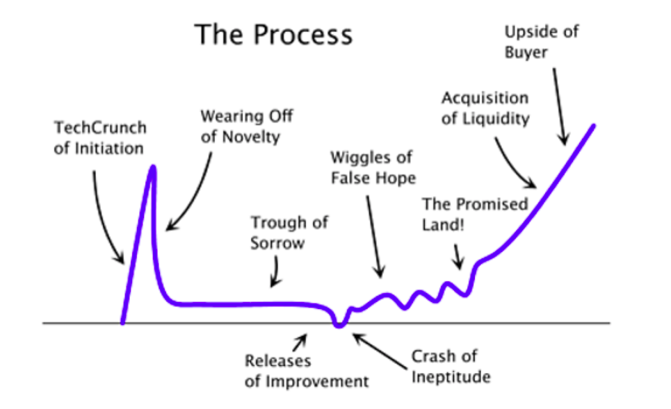

- 000 开篇词 卓越的团队，必然有一个卓越的领导者.md
- 001 你的能力模型决定你的职位.md
- 002 七位CTO纵论技术领导者核心能力.md
- 003 CEO实话实说：我需要这样的CTO.md
- 004 技术领导者不等于技术管理者.md
- 005 CTO的三重境界.md
- 006 像CEO一样思考.md
- 007 要制定技术战略，先看清局面.md
- 008 技术领导力就是成事的能力.md
- 009 CTO是商业思维和技术思维交汇的那个点.md
- 010 创业公司CTO的认知升级.md
- 011 最合适的技术才是最有价值的技术.md
- 012 谈谈CTO在商业战略中的定位.md
- 013 把脉高效执行的关键要素.md
- 014 从零开始搭建轻量级研发团队.md
- 015 定制高效研发流程.md
- 016 培养中层团队的管理认知.md
- 017 团队成长要靠技巧和体系.md
- 018 做到这四点，团队必定飞速成长.md
- 019 将企业打造成一所终身大学.md
- 020 论团队管理与共同升级.md
- 021 绩效管理的目标不仅仅是绩效考核.md
- 022 验证研发团队价值的绩效考核机制.md
- 023 产品技术团队OKR使用法则.md
- 024 996、987，程序员加班文化你怎么看？.md
- 025 建立有效的员工淘汰机制.md
- 026 让细节的病毒感染你的团队.md
- 027 如何在不同组织文化下推行技术管理.md
- 028 业务高速增长期的团队管理：知轻重、重绸缪、调缓急.md
- 029 被8成的人误解的工程师文化.md
- 030 关于工程师文化的六个问题.md
- 031 五位技术领导者的文化构建实战.md
- 032 文化是管理的那只无形之手.md
- 033 选对的人，做正确的事情.md
- 034 打好技术团队搭建的基础.md
- 035 做个合格的技术岗位面试官.md
- 036 高潜力人才的内部培养.md
- 037 技术创业该如何选择赛道.md
- 038 CTO要掌握的产品哲学：理性与人性的权衡.md
- 039 从客户价值谈技术创新.md
- 040 技术人投身创业公司之前，应当考虑些什么？.md
- 041 技术人创业前要问自己的六个问题.md
- 042 团队激励之分配好你的奖金.md
- 043 通过积分考核提升技术团队的绩效.md
- 044 空降技术高管的择业七计.md
- 045 选好人生下一站–CTO空降上篇.md
- 046 走出至暗时刻–CTO空降下篇.md
- 047 空降领导者平稳落地要做的四道题（上）.md
- 048 空降领导者平稳落地要做的四道题（下）.md
- 049 打造高效的研发组织架构：高效研发流程那些事（一）.md
- 050 你的研发流程符合你的组织架构吗？谈高效研发流程那些事（二）.md
- 051 聊聊研发流程管理中的那些坑：高效研发流程那些事（三）.md
- 052 数据如何驱动研发高效运转？谈高效研发流程那些事（四）.md
- 053 如何打造高效且敏捷的组织文化？谈高效研发流程那些亊（五）.md
- 054 打造高速运转的迭代机器：现代研发流程体系打造（一）.md
- 055 用机器打造迭代机器：现代研发流程体系打造（二）.md
- 056 有了敏捷开发，那交付期限去哪儿了？.md
- 057 敏捷中的期限之殇，软件业该怎么做？.md
- 058 如何打造个人技术品牌？.md
- 059 技术演，有章可循.md
- 060 正确对待技术演中的失误.md
- 061 刘俊强：技术最高决策者应该关注技术细节吗 .md
- 062 张溪梦：技术领袖需要具备的商业价值思维.md
- 063 未来组织形态带来的领导力挑战.md
- 064 如何判断业务价值的高低.md
- 065 如何打造高效的分布式团队？.md
- 066 如何打造有活力、持续创新的研发团队？.md
- 067 如何打造独属自己的工程师文化？.md
- 068 如何打造一个自组织团队？.md
- 069 茹炳晟：QE团队向工程效能团队转型的实践之路.md
- 070 技术、产品、管理的不同视角.md
- 071 什么样的人适合考虑管理角色.md
- 072 创业公司如何招到合适的人才.md
- 073 用数据来分析管理员工.md
- 074 为什么给了高工资，依然留不住核心员工？.md
- 075 刘俊强：一本正经教你如何毁掉一场技术演.md
- 076 内部技术会议的价值.md
- 079 程军：从0到1打造高效技术团队的方法论.md
- 080 技术Leader的持续成长.md
- 081 游舒帆：一流团队必备的商业思维能力.md
- 082 游舒帆：数据力，透过数据掌握公司经营大小事.md
- 083 游舒帆：运营力，让用户出现你期待的行为.md
- 084 游舒帆：策略力，让目标与行动具备高度一致性.md
- 085 游舒帆：敏捷力，拥抱不确定性，与VUCA共舞.md
- 086 刘俊强：管理者必备的高效会议指南（上）.md
- 087 刘俊强：管理者必备的高效会议指南（下）.md
- 088 刘俊强：做好一对一沟通的关键要素（上）.md
- 089 刘俊强：做好一对一沟通的关键要素（下）.md
- 090 程军：打造高效技术团队之招人.md
- 091 程军：打造高效技术团队之做事.md
- 092 成敏：技术负责人如何做优先级决策.md
- 093 兰军：团队研发效率低下的要因分析.md
- 094 兰军：提升产品团队研发效率的实践（上）.md
- 095 兰军：提升产品团队研发效率的实践（下）.md
- 096 阿禅：工程师转型产品经理可能踩到的坑.md
- 097 阿禅：工程师转型产品经理的必备思维.md
- 098 徐裕键：业务高速增长过程中的团队迭代.md
- 099 徐裕键：业务高速增长过程中的技术演进.md
- 100 徐裕键：团队文化建设，保持创业公司的战斗力.md
- 101 刘俊强：领导力提升指南之培养积极的态度.md
- 102 姚从磊：巧用AARRR模型，吸引优秀技术人才（一）.md
- 103 姚从磊：巧用AARRR模型，吸引优秀技术人才（二）.md
- 104 姚从磊：巧用 AARRR 模型，吸引优秀技术人才（三）.md
- 105 姚从磊：巧用 AARRR 模型，吸引优秀技术人才（四）.md
- 106 程军：技术人的「知行合一」（一）.md
- 107 刘俊强：消除压力的七种方法.md
- 108 谢呈：技术高手转身创业的坑和坡.md
- 109 谢呈：关于垂直互联网创业的一些经验之谈.md
- 110 成敏：创业公司为什么会技术文化产品缺失.md
- 111 蔡锐涛：从0到1再到100，创业不同阶段的技术管理思考.md
- 112 刘俊强：必知绩效管理知识之绩效管理循环.md
- 113 程军：技术人的「知行合一」（二）.md
- 114 成敏：谈谈不同阶段技术公司的特点.md
- 115 成敏：打造优秀团队与文化的三个推手.md
- 116 刘俊强：必知绩效管理知识之绩效目标的制定.md
- 117 程军：技术人的「知行合一」（三）.md
- 118 吴铭：成本评估是技术leader的关键素质.md
- 119 汤力嘉：CTO如何进行产品决策（一）.md
- 120 刘俊强：必知绩效管理知识之绩效数据收集（上）.md
- 121 刘俊强：必知绩效管理知识之绩效数据收集（下）.md
- 122 黄伟坚：创业中那些永远回避不了的问题.md
- 123 黄伟坚：用系统性思维看待创业.md
- 124 刘俊强：必知绩效管理知识之评定绩效.md
- 125 洪强宁：从程序员到架构师，从架构师到CTO（一）.md
- 126 洪强宁：从程序员到架构师，从架构师到CTO（二）.md
- 127 刘俊强：必知绩效管理知识之绩效沟通（一）.md
- 128 王坚：年轻人永远是创新的主体.md
- 129 刘俊强：必知绩效管理知识之绩效沟通（二）.md
- 130 刘俊强：必知绩效管理知识之绩效沟通（三）.md
- 131 汤力嘉：CTO如何在产品方面进行决策（二）.md
- 132 徐函秋：转型技术管理者初期的三大挑战（一）.md
- 133 徐函秋：转型技术管理者初期的三大挑战（二）.md
- 134 刘建国：我各方面做得都很好，就是做不好向上沟通.md
- 135 钮博彦：软件研发度量体系建设（一）.md
- 136 钮博彦：软件研发度量体系建设（二）.md
- 137 成敏：创业者不要成为自己公司产品技术文化的破坏者.md
- 138 于艺：以生存为核心，B端产品的定位心法.md
- 139 成敏：创业者应该具备的认知与思维方式.md
- 140 袁店明：创业产品必须迈过的鸿沟.md
- 141 徐毅：五星级软件工程师的高效秘诀（一）.md
- 142 徐毅：五星级软件工程师的高效秘诀（二）.md
- 143 徐毅：技术Leader应该具备的能力或素质.md
- 144 于艺：如何提升自己的能力与动力.md
- 145 李列为：技术人员的商业思维.md
- 146 刘天胜：打造高效团队，关键在于平衡人、事和时间（一）.md
- 147 刘天胜：打造高效团队，关键在于平衡人、事和时间（二）.md
- 148 肖德时：创业团队技术领导者必备的十个领导力技能（上）.md
- 149 肖德时：创业团队技术领导者必备的十个领导力技能（下）.md
- 150 暨家愉：技术人如何快乐的自我成长（上）.md
- 151 暨家愉：技术人如何快乐的自我成长（下）.md
- 152 施翔：如何打造7 24高效交付通道（上）.md
- 153 施翔：如何打造7 24高效交付通道（下）.md
- 154 谢东升：说说技术管理者从外企到民企的挑战.md
- 155 王可光：如何搭建初创团队之人才关.md
- 156 成敏：技术人转型管理的两大秘诀.md
- 157 成敏：技术人才的管理公式.md
- 158 胡峰：人到中年：失业与恐惧.md
- 159 黄云：技术管理者如何科学的做好向上管理.md
- 160 胡键：创业公司需要高凝聚力高绩效的技术团队.md
- 161 卢亿雷：企业发展的不同阶段，该如何打造高效的研发流程体系.md
- 162 王海亮：提升技术团队效率的5个提示（上）.md
- 163 王海亮：提升技术团队效率的5个提示（下）.md
- 164 陈崇磐：心理成熟度 - 创业公司识人利器.md
- 165 陈崇磐：管事与管人 - 如何避开创业公司组队陷阱.md
- 166 俞圆圆：合格CTO应该做好的5件事（上）.md
- 167 俞圆圆：合格CTO应该做好的5件事（下）.md
- 168 余加林：从技术人到创业合伙人必备的三个维度的改变.md
- 169 高琦：如何给研发打绩效不头疼而又公正？（上）.md
- 170 高琦：如何给研发打绩效不头疼而又公正？（下）.md
- 171 邱良军：如何有效地找到你心仪的人才.md
- 172 于人：研发团队人均产能3年提升3.6倍的秘诀（上）.md
- 173 于人：研发团队人均产能3年提升3.6倍的秘诀（下）.md
- 174 邱良军：打造高效技术团队，你准备好了吗！.md
- 175 邱良军：打造高效技术团队的人才招聘攻略.md
- 176 胡键：创业公司如何打造高凝聚力高绩效的技术团队：组织篇.md
- 177 胡键：创业公司如何打造高凝聚力高绩效的技术团队：工具篇.md
- 178 马连浩：用人的关键在于用人所长，而非改人之短.md
- 179 张矗：技术管理者必经的几个思维转变.md
- 180 钟忻：成为温格-聊聊如何当好CTO.md
- 181 姚威：技术团队管理中关于公平的五个核心准则.md
- 182 谢文杰：区块链的下一个十年.md
- 183 薛文植：技术管理的本质-要做尊重人性的管理.md
- 184 狼叔：2019年前端和Node的未来-大前端篇（上）.md
- 185 狼叔：2019年前端和Node的未来-大前端篇（下）.md
- 186 赵晓光：如何培养团队竞争力（上）.md
- 187 赵晓光：如何培养团队竞争力（下）.md
- 188 张嵩：从心理学角度看待小中型团队的管理.md
- 189 狼叔：2019年前端和Node的未来-Node.js篇（上）.md
- 190 狼叔：2019年前端和Node的未来-Node.js篇（下）.md
- 191 肖冰：如何建立高信任度的团队.md
- 192 崔俊涛：如何做好技术团队的激励（上）.md
- 193 崔俊涛：如何做好技术团队的激励（下）.md
- 194 刘俊强：2019年云计算趋势对技术人员的影响.md
- 195 吴晖：企业B2B服务打磨的秘诀-ESI.md
- 196 邱良军：关于做好技术团队管理的几点思考.md
- 197 邱良军：做好研发管理的3个关键.md
- 198 徐林：通过快速反馈建立充满信任的技术团队.md
- 199 宝玉：怎样平衡软件质量与时间成本范围的关系？.md
- 200 邱良军：沟通，沟通，还是沟通（上）.md
- 201 邱良军：沟通，沟通，还是沟通（下）.md
- 202 陈嘉佳：奈飞文化宣言（上）.md
- 203 陈嘉佳：奈飞文化宣言（下）.md
- 204 邱良军：从小处着眼，修炼文化价值观.md
- 205 邵浩：人工智能新技术如何快速发现及落地（上）.md
- 206 邵浩：人工智能新技术如何快速发现及落地（下）.md
- 207 许良：科创板来了，我该怎么办？.md
- 208 陈阳：科创板投资，未来哪些行业受益最大？.md
- 大咖对话 万玉权：如何招到并培养核心人才.md
- 大咖对话 万玉权：高效团队的关键，以目标为导向，用数据来说话.md
- 大咖对话 不可替代的Java：生态与程序员是两道护城河.md
- 大咖对话 从几个工程师到2000多个工程师的技术团队成长秘诀.md
- 大咖对话 以产生价值判断工程师贡献–读者留言精选.md
- 大咖对话 余沛：打造以最佳交付实践为目标的技术导向.md
- 大咖对话 余沛：进阶CTO必备的素质与能力.md
- 大咖对话 刘俊强：云计算时代技术管理者的应对之道.md
- 大咖对话 刘俊强：谈谈我对2019年云计算趋势的看法.md
- 大咖对话 创业就是把自己过去的经验快速的产品化.md
- 大咖对话 如何打造自我驱动型的技术团队？.md
- 大咖对话 如何高效管理8000多规模的技术团队.md
- 大咖对话 季昕华：以不变的目的应对多变的技术浪潮.md
- 大咖对话 对人才的长期投资是人才体系打造的根本.md
- 大咖对话 张建锋：创业可以快而大，也可以小而美.md
- 大咖对话 彭跃辉：保持高效迭代的团队是如何炼成的.md
- 大咖对话 彭跃辉：解决用户痛点就是立足于市场的秘诀.md
- 大咖对话 徐毅：如何提升员工的活力与动力？.md
- 大咖对话 徐毅：打造高效研发团队的五个维度及相关实践.md
- 大咖对话 技术人创业前衡量自我的3P3C模型.md
- 大咖对话 技术人真正需要的是升维思考.md
- 大咖对话 技术管理者应该向优秀的体育教练学习.md
- 大咖对话 未来技术负责人与首席增长官将如何协作？.md
- 大咖对话 李昊：创业公司如何做好技术团队绩效考核？.md
- 大咖对话 李智慧：技术人如何应对互联网寒冬.md
- 大咖对话 杨育斌：技术领导者要打造技术团队的最大化价值.md
- 大咖对话 池建强：做产品不要执着于打造爆款.md
- 大咖对话 焦烈焱：从四个维度更好的激发团队创造力.md
- 大咖对话 玉攻：四个维度看小程序与App的区别.md
- 大咖对话 王坚：我从不吃后悔药.md
- 大咖对话 王平：从人、事、价值观、文化等维度看技术团队转型.md
- 大咖对话 王平：如何快速搭建核心技术团队.md
- 大咖对话 王鹏云：技术人创业该如何选择合伙人？.md
- 大咖对话 王鹏云：管理方式的差异是为了更好地实现企业商业价值.md
- 大咖对话 王龙：利用 C 端连接 B 端实现产业互联网是下半场的重中之重.md
- 大咖对话 童剑：用合伙人管理结构打造完美团队.md
- 大咖对话 管理者是首席铲屎官？.md
- 大咖对话 胡哲人：技术人创业要跨过的思维坎.md
- 大咖对话 袁店明：如何将打造自组织团队落诸实践.md
- 大咖对话 袁店明：打造高效研发团队的五个要点.md
- 大咖对话 让团队成员持续的enjoy.md
- 大咖对话 谢孟军：技术人如何建立自己的个人品牌.md
- 大咖对话 谭待：架构的本质是折中.md
- 大咖对话 陈天石：AI 芯片需要技术和资本的双重密集支撑.md
- 大咖对话 陈斌：如何打造高创造力、高动力的技术团队.md
- 大咖对话 陶真：技术人要爱上问问题，而不是自己的解决方案.md
- 大咖对话 韩军：CTO转型CEO如何转变思路.md
- 大咖对话 项目成功的秘诀–技术产品双头负责制.md
- 大咖对话 顾旻曼：投资时我们更多地是在找优秀的团队.md
- 大咖对话 高斌：过分渲染会过度拉高大众对人工智能的期望.md
- 大咖问答 发现下一个小米，不是只能靠运气.md
- 大咖问答 打造自己的个人品牌，你也可以.md
- 新春特辑1 卓越CTO必备的能力与素质.md
- 新春特辑2 如何成长为优秀的技术管理者？.md
- 新春特辑3 如何打造高质效的技术团队？.md
- 新春特辑4 如何打造高效的研发流程与文化？.md
- 新春特辑5 如何做好人才的选育用留？.md
- 温故而知新 一键直达，六大文章主题索引.md
- 结束篇 即使远隔千山万水，也要乘风与你同往.md
大咖对话 池建强：做产品不要执着于打造爆款
你好！
本周作客“大咖对话”的嘉宾是池建强，现任极客邦科技总裁，从零开始打造了IT类知识服务产品极客时间。加入极客邦前，曾服务于洪恩软件、用友集团和锤子科技等公司。
极客时间：根据您的观察，技术人创业容易踩哪些坑？
池建强：技术人创业其实就是跳出技术的圈子，从另一个维度，比如产品、商业模式上去寻找更多的可能性，这个过程同样充满挑战和乐趣，创业的时候要专注在这个过程上，而不是技术领域。在不同的阶段使用合适的技术解决相关场景的业务需求，创业者需要的不是炫技，而是提供能够为业务服务的技术。
人们常说，一件商品最重要的是质量，但是提高产品质量最关键的是精准的把握用户需求的本质。否则，无论产品质量多好，功能多么丰富，如果不是用户需要的，那么这个产品就是不成功的，是某种程度的自嗨。技术也是同样的道理。
另外，在领域的选择上，技术人容易根据自己之前的经验选一些看起来是降维打击的创业方向，也容易掉进自己的思维陷阱。
很多朋友做烦了 toC（面向普通消费者）的产品，认为 toB （面向企业）是个大市场，一头扎进去也会发现很难，不仅仅是客户难伺候，个性化和通用软件也会不停的打架。规模化还是 Case by Case ，都是艰难的选择。
有些人则烦透了企业客户，开始做 toC 的创业，也难，因为 toC 的产品做出来容易，用户认可和规模化则是个大难题。数据增长和日活是很多 toC 产品迈不过去的坎，转化和收入也更是让人焦虑不已。
有些人适合做 toC 的产品，有些人适合 toB，这个需要每个创业者自己去探索和选择。我自己喜欢做个人消费者的产品，更有意思，更挑战，也更平民化。
有朋友问我，哪个更容易哪个更难呢？天下没有容易的事，都难。重要的是你的选择和坚持。
另外，创业和在大公司打工不同。大公司资源丰富，你做到总监级别，很多琐事是不需要关注的，公司作为平台会提供你想要的各种资源，你只需要专注于某个领域进行突破就好了。有时候这种平台之上的成功容易造成一种错觉：原来我真的很牛！
其实并不是这样，平台隐形的力量不可忽视。一旦开始创业，财务、行政、市场、运营方方面面的事情都需要创业者去操心，可谓事无巨细，也许员工的座椅都需要你决定用哪个牌子。这时候就需要找到能和你互补的合伙人，把自己不擅长的事情交给别人去做，自己去做最擅长的业务和产品。
发挥自己的长板，让别人补足你的短板，这就是现代的木桶理论。
极客时间：您创业至今，从零开始打造了极客时间这一产品，在这个过程中，您最大的挑战和收获分别是什么？能以具体事例来辅助阐述么？
池建强：从零开始做一个产品是非常独特和有价值的事情，事实上很少有人能从头开始参与一个产品的构建过程。有的人是中途加入，有的人是整个平台已经成形之后添砖加瓦。我个人能够主导极客时间这个产品，实在是一件幸运的事。
在打造产品的过程中会遇到各种各样的问题，如何组建团队，如何选择技术体系，如何进行产品定义，如何首次发布产品，如何迭代，如何触达你的用户等等，限于篇幅，我简单介绍几个感触比较深的点。
1.不要想打造爆款产品
首先，每个产品的出现都有原因和相关的背景。公司愿意投入人力物力去研发一款产品，自然希望产品一发布即大获成功，比如：在发布产品的那一刻，你会觉得，如果你的手指向苍穹，就能看到电闪雷鸣；你登上山峰，千年的冰雪就会融化成水；你走上舞台，就会有千百双手在挥舞……但事实是并不会这样。
大部分情况下什么都没有发生。爆款产品是因为真的“爆”了，才被叫做爆款，很少有人开始的时候就说要打造爆款，因为说了也没什么用。大部分产品都是一点一点长起来了，微信也不例外，只不过由于腾讯的用户体量，微信的起点更高罢了。事实上很多爆款都是黑天鹅事件，而黑天鹅事件是可遇不可求的。
2.一个成功产品有其增长曲线图
那么一个成功产品的增长曲线是什么呢？大概是这样的：
发布，获得初始用户，拉起一条增长曲线，然后失去新鲜感，数据下降，保持在一个低水平线上，反复迭代，挣扎，试错，找到真正的用户需求点，很多产品在这个阶段就死掉了，活下来的继续前行，直到找到那个数据上扬的拐点……

知道了这一点，我们就不用苛求自己的产品上线后马上一飞冲天。从心理上接受这个事情，我们就能更加从容自由地去迭代和尝试。正如 Airbnb 创始人 Brian Chesky 所说的那样：“如果你的产品发布后没人买账的话，那么不妨再发布一次。”反正你是小公司，没人关心你的产品到底发布了几次。
产品发布之后，一般会有一个数据拉升的曲线，之后就是不断的迭代了。迭代就涉及到功能和版本规划，极客时间初期版本基本上是没有规划的，1.0.0发布之后，需求和用户反馈即扑面而来，我们只能且战且行，临时计划，随时发布。两周之后，差不多有了比较细致的计划，一月一个大版本，一个小版本，迭代着往前跑。
有计划就行了吗，并不是这样，因为计划赶不上变化，甚至很多变化是不可控的。
3.计划赶不上变化
在做产品的过程中我们会遇到各种意想不到的问题，比如产品延期，人员变动，产品特性用户不买账，甚至你计划好上线的运营活动会因为苹果不给过审，白白等待两个星期错过最佳时期……
遇到变化怎么办？分析问题，解决问题，根据用户的反馈做出更好的解决方案，复盘，打样，然后再次制定计划和执行。
有人会觉得如果总是变那干脆不要计划了，这也是不可取的。邱岳老师在他的产品专栏里说过，没有任何作战计划在与敌人遭遇之后依然有效，但做计划的过程依然是必要的。缺乏计划会让产品失掉节奏感，员工失去方向，并且很难专注。计划制定的过程，本身是一个制定战略，统一思想，上下齐心的过程。也就是说，大家要登船渡海，扬帆起航了，得弄个罗盘，定好灯塔，然后再出发，这样在行进的过程中，无论怎么折腾，总的方向不会有大的偏差。
4.遇到挫折怎么办？不要有侥幸心理
我们在做系统开发的时候经常会遇到这样的问题，生产系统好好的谁也没动，也没有大的流量进来，一切都有条不紊，然后系统突然就挂了。这时候我们会下意识的以为是偶然事件并祭出杀手锏「重启试试」。重启能够撑一阵子，但是很快又挂了，往返几次，工程师们才会意识到是真的出了问题，开始从代码和日志中寻找蛛丝马迹。这种情况常有发生，一般是因为数据或流量突破了某个边界，或者设计的时候没有考虑某种状态的变化。你只有找到了真正的原因，才能彻底解决问题。
记住墨菲定律，当你认为要出问题的时候，就一定会出问题，决不能有侥幸心理。
5.寻找外援
程序员解决研发中碰到的问题喜欢钻牛角尖，看起来不达目的誓不休，但你可能解决的是个陈旧的问题，别人早就解决了一千遍，你搞不定只是因为你不知道而已。所以，当我们被某个问题卡了很久的时候，就该去寻求帮助了。这种帮助可以是公司内部的，也可以是公司外部的。
我们在开发这款产品的过程中得到了很多朋友的帮助，得到、知识星球、微信、微信读书的朋友，他们都给了非常好的意见或建议。这时候有人就会问了，你这是有资源，我们没有资源怎么去找外援呢？
要知道创业者的资源也不是从天下掉下来的，而是付出自己的时间和资源置换的。如何获取资源呢？
- 一，打铁还需自身硬，你自己得有真本事。
- 二，把自己知道的东西分享给别人。我经常会获得一些陌生人的帮助，问起原因，说是 MacTalk 的某一篇文章对其有极大的帮助。说实话我已经记不起是什么文章了。
- 三，构建健康的社交圈子。有些人能够成为生死之交，有些可以成为朋友，有的人能在关键时候能够互相帮助。不要太计较得失，在有可能的情况下尽最大努力帮助别人。
资源是相互吸引的，你想要资源，首先自己也得有资源，否则你有什么资格免费获得别人的帮助呢？
极客时间：现在有不少观点是技术人要具备产品思维，您能分享一下您的观点么？具体落地的话，该怎样提升产品思维呢？
池建强：技术人学习一些产品知识，对自己有百利无一害。
工程师如果对产品很有感觉，和产品经理沟通起来会更加顺畅，而不是你说什么我就做什么。在很多互联网公司工程师都具备很强的产品思维，甚至一些技术产品本身就是工程师主导研发的。
还有一些技术人会直接转成产品经理，腾讯的马化腾就非常推崇技术出身的产品经理，他说：
产品和服务是需要大量技术背景的，我们希望的产品经理是非常资深的，做过前端、后端开发的技术研发人员晋升而来。好的产品最好交到一个有技术能力、有经验的人员手上，这样会让大家更加放心。
很多产品经理对核心能力的关注不够，不是说完全没有关注，而是没有关注到位。核心能力不仅仅是功能，也包括性能。对于技术出身的产品经理，特别是做后台出来的，如果自己有能力、有信心做到对核心能力的关注，肯定会渴望将速度、后台做到极限。
事实上，现在很多顶尖的产品经理，当年都是喜欢编程的少年人。
还有一些技术人出来创业，这时候就需要关注产品的整个生命周期，而不是局限在技术领域，产品思维就越发重要了。
要不要学习产品构建的知识呢？无论从哪个方面讲 —— 理解、协作、沟通、转行、创业 —— 这个答案一定是肯定的。技术人了解产品知识，不仅能够加速自己的成长，降低沟通成本，形成更好的协作关系，甚至未来，你去主导一款自己的产品也是非常可能的。
如何提高产品思维呢？这是个非常大的话题，很难在一篇文章里讲清楚。我们特地在极客时间开设了三个产品专栏，让资深的产品专家，从实际的场景出发为大家剖析产品的诞生、增长、数据能力和商业意识等，有兴趣的话大家可以了解一下。当然，专栏只是地图和指引，所有的知识，都需要你在实战中演练和打磨。
© 2019 - 2023 Liangliang Lee. Powered by gin and hexo-theme-book.